マザーボード遊びのページ
昔、私がアマチュア無線をやっていた頃、アルミのシャシーに 、適当に穴をあけて作ったバラックセットで、真空管（UY807です）や、部品を取り替えたりしながら、
楽しんでいました。その後、日本でも、メーカ製の機械が売られるようになり、自作派はごく少数に なってしまいました。 パソコンでは、４層プリント基盤など、アマチュアに作れる物ではないので、昔、真空管が自作
できなかったのと同じに、マザーボードを、一つの中心となる部品としてとらえ、バラックセット を作ったり、壊したりしながらで遊んでみます。
前書き
まず、マザーボードという呼び方ですが、MAC系では、ロジックボードと呼ぶ方が多い ようです。DOS/V系つまり日本のIBM/PC互換機ではマザーボード、PC98ではマザーボード
ともロジックボードとも呼ばれないのがふつうでした。他にメインボードとも呼ばれる ことがあります。ここでは、マザーボードと呼ぶことにしておきます。
マザーボードは、パソコンの主要な部品であり、マザーボードを知れば、すべてのパソコン パーツを知ることができる、とまで言われています。マザーボードをケースから取り出し、
虫眼鏡を使って、じっくりと眺めてみると、実にいろいろなことが読みとれます。たとえば 同じシリーズで、機種の違う２枚のボードを比較しながらみると、少しだけ違ってところが
あり、そこから、改造のヒントが得られたりします。ふとしたきっかけで、 マザーボードの面白さに触れてしまったら、遊んでみるしかありません。
遊びの対象となるマザーボードの条件
a.箱に入っていたり、説明書が付いていたりしないこと。
b.よくわからない、動かしてみると、面白そうなもの。
c.値段が安いこと、できれば千円以下。
その１ DOS/Vマザーボード1 （ﾏｲｸﾛATX、ソケット7、Sis540チップセット、500円）
秋葉原のあるところで、どこかからの放出品らしい、オールインワンのマザーボードを見付けた。この値段でちゃんと動いたら面白いなと思い、買ってきた。持ち帰ってから、よく見ると、IBMの製品らしい。
とりあえず、動くかどうか、あり合わせの部品を取り付け、BIOSを起動してみる。CPUはk6-333を100MHzの3.5倍に、コア電圧は2.2Vに設定。ATX電源をつなぎ、電源オンらしきコネクタにスイッチをつなぎ、電源オン。電源が入らない。電源が入っても、何秒かたつと落ちてしまう。電源オンのコネクタを、ピンセットの先で、瞬間ショートしてやると、立ち上がった。そのままBIOSの起動が進行し、どうやらマザーボードは正常らしい。頭を冷やして考えると、スイッチがいけないらしい。接点をホールドするスイッチではだめで、指で押しているときだけオンになるタイプのスイッチに、取り替える（ATX用のスイッチ）。今度は大丈夫。落ち着いてBIOSを読むことができる。IBMのロゴが出て、F1を押すとセットアップに入れる。System
Summaryのすぐ下に、Puroduct Dataという項目がある。ここに入ってみると、Machine Type/Modelというところに、型名を表す数字が書いてある。ここまでくれば、後はその型名をたよりに、ホームページから、スペックやドライバなどを見つけることができる。
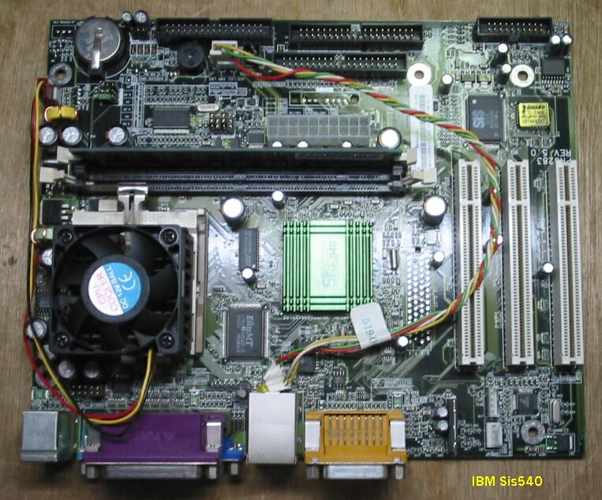
(2002.1)
FMVのケースに入れ、生活の道具にする。
このマザーボードを、古いFMVの中に入れてみました。FDD、CDROM、NDDマウンタ、PowerSWだけ残し、 中身を取り出し、ATX用150W電源、10GBのIDEHD、K6-II/500、128MBSDRAM、をのせたマザーボードを
PCIスロットが、アクセスできる位置に取り付けます。OSは、Windows2000を使ってみました。内蔵Network のドライバはありましたが、Video、Audioのドライバはないので、PCIに、別途Milleniumと、SBを取り付けました。高さは、何とか収まり増したが、限界のようです。USBが使えるので、カメラをつないだりして、
生活の道具になっています。 (2002/8/18記)
その2 MAC ロジックボード1 （68040、900円）
MACのものらしいロジックボードが、段ボール箱に大量に入れられて、１枚900円で売られていた。こわれたⅡCiの箱に入れてみるかと思い、２枚買ってきた。ⅡCiの電源をつなぎ、72PinnのSIMMを１枚、68LC040CPU挿し起動してみた。起動音がして、FDに?マークが点滅する画面が出る。もう１枚のボードも問題なし。そこで、OS7.6を立ち上げてみた。問題なく立ち上がる。クロックを測定しようとしたらフリーズ。OSが合わないのかと思い、替えてみたがだめ。どうやら、CPUが問題らしい。いろいろとMAC関係の本や、サイトで調べると、このロジックボードはQuadra650のもので、LCタイプのCPUは使えないらしい、とわかってきました。後日、68040の付いた、Centris650のボードを手に入れ、CPUを交換してみると、問題は解決しました。逆に、68LC040をCentrisのボードに挿してみると、これも全く問題なく動作します。また、Centris650をクロックアップする、WOMBATといわれる改造をすると、LCタイプのCPUは使えなくなります。ⅡCiやCxの筺に入れる場合、注意しなければならないことがあります。それは、筺の内部には、金属が蒸着メッキされており、当然導電性があるので、ロジックボードの下側の配線が触れると、ショートして、故障することがあると言うことです。実際に、7100/66のボードを壊してしまいました。気が付いてからは、絶縁シートを入れるとか、危なそうなところを、丹念にヤスリで削ったりしています。
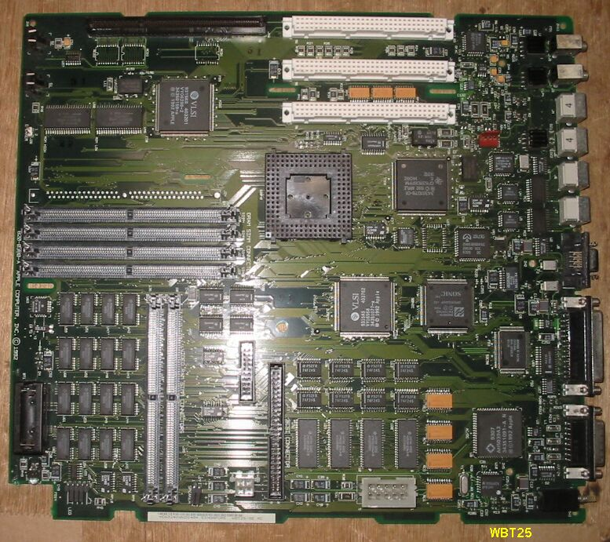
写真はQuadra/Centris650のものらしきマザーボードWBT25、Quadra800のマザーボードはWBT33となっている。
(1999)
その3 DOS/V マザーボード2 （TYAN S1590S 100AT Rev1.1、金額不明）
このボードは、以前息子から買い上げた、使い古しのパソコンに入っていたもので、別なマザーボードに交換した後使い道が無く、棚の上にのっていたものです。使用可能なProcessorは、Pentium/PentiumMMX/K5/K6/K6-2/6x86/6x86MX/C6/C6+で、チップセットはVIA
MVP3 AGPsetです。電源は、ATまたはATXで両方のコネクタが付いています。168pinDIMMソケットが３個付いていますが、72pinSIMMのソケットも２個付いています。今回、このマザーボードが日の目を見たのは、FMV-5120-TEというパソコンを拾ったからで、マザーボードがひどく改造されており、BIOSさえ動作しませんでした。マザーボードはAT型なので、たぶんうまく収まるとみて、TYAN
S1590Sを入れてみることにしたたわけです。電源をみると、ふつうのAT電源と違って、3.3V専用のコネクタが付いています。3.3Vが別なのは、メーカ製のパソコンで時々見かけます。ATXでもDELL製のボードで、見たことがあります。3.3Vは放っておいて、その他の２個のコネクタだけつなげば動作しました。CPUはPemtiumMMX200が余っていたので、100MHzx2.5=250MHzで動作させてみます。試しに、3.0にしてみましたが、300MHzでも動きます。150%のオーバークロックですね。困るのがフロントパネルとの接続で、最低限、電源表示くらいはつけたいのですが、コネクタがメーカー独自ですので、配線を解きほどいて、改造する必要がありそうです。ケースの構造は、安物の自作用のものより、しっかりしているので、Linuxを入れて、サーバーにするかなと、考えています。(2002.03)
その4 MAC のプラグイン式マザーボード
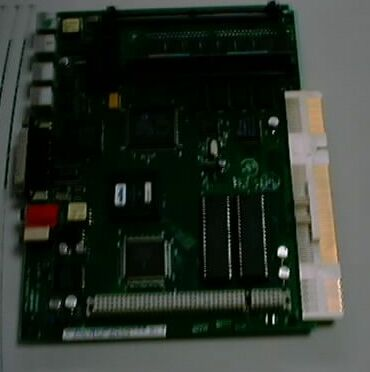
一時期のMACでは、プラグイン式のマザーボードが使われていたことがあります。最初は、カラークラシックからのシリーズで、カラークラシック、カラークラシックII、LC520、LC550、LC575などがあります。上の写真は、カラークラシックII（MC68030/33MHz）のマザーボードで、コネクタが金色に写っています。このボードは、３００円で入手したものですが、カラークラシックに挿したところ、そのままで動作しました。LC520の方は、ドライブ類を抜き取った残骸を５０円で買ったのですが、MC68030/25MHzを33MHzに改造し（ボード裏側のチップ抵抗を移動させる。詳しくはドーピングマックに出ている。）、やはりカラークラシックで動作が確認できました。LC575（XC68LC040RC33B/33MHz）は、カラークラシックの改造がはやっていた頃買ったので、４千円位したと思います。これを40MHzに改造してカラークラシックに入れてあります。次は、LC630（Performa630）からのシリーズで、68040からPowerPCへの過渡期のものです。本体ごと購入した、5410（PPC603/75MHz）と6310（同）を持っています。
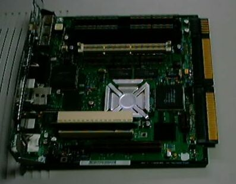
最後は、6300/160からのシリーズで、写真は6300/160です。中央に見えるのがPowerPC603ev、低電圧化と省電力された603です。CPUかぶさるように見える白いのがPCIスロットで、以前のシリーズはLCPDSスロットでしたが、初めてPCI化されました。電源に3.3Vが必要なので、6310などに挿しても動作しません。これは、ドライブ類の抜き取られた本体ごと、３００円で購入したものです。（2002/5/27記）
その5 組込用ISAボード型PCA-6151ボード(680円)
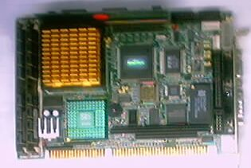
このボードは、今年の春頃から秋葉原のいくつかのジャンクショップで見かけるようになったもので、 最初は1280円でしたが、680円まで落ちてきたので、部品取りでもいいと思い、購入しました。
メーカはADVANTECHで、WEBで調べると仕様なども判明しました。主な仕様は、
・CPU Pentium200MHz
・Chipset Sis 5596
・RAM 32MB Max64MB
・VGA Sis 5596 PCI Max1204x768 256color
・その他 IDE、FDD、PS/2 KB/MOUSEポートなど
これだけで、かなり旧式ながら１台のPCになるようです。とりあえず、HDDやCDROMなどと同じコネクタで 、5Vと12Vのみを、AT電源から供給するようにしてみたところ、BIOSが立ち上がりました。CPUのFAN電源
の配線が面倒だったので、90MHzのPentiumをヒートシンクのみで載せてあります。使い道はこれから 考えようと思います。（2002/7/5記）
もう１個追加購入。今回は980円でした。（2002/7/28記）
その6 ELITE UP8810 socket3 マザーボード(100円)
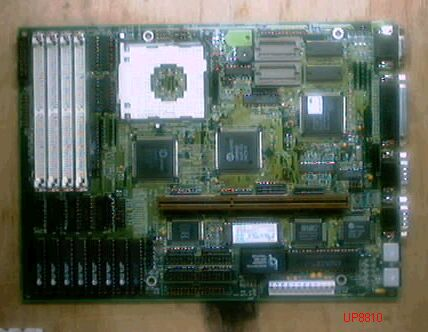
このボードは、先週の木曜日に、秋葉原へ行ったとき、あるDOS/V系のショップで、雨に降り込められて、 じっくりと店内を見回していたら、目に入ったもので、socket3は珍しいので、速購入したものです。
そのときは、メーカ、型式などは不明で、帰ってからWEBで調べると、仕様なども判明しました。 主な仕様は、
・CPU i486 SX/DX/DX2/DX4 25/33/50MHz
AMD486 am486SX/DX/DX2/DX4
Cyrix Cx486DX/DX2 Cx486S
UMC486 U5
・Chipset UMC8881/8886
・RAM Max128MB
・Cache 256KB
・BIOS Phenix
・VGA CL GD5434
・その他 IDE、FDD、PS/2 KB、MOUSEポートなど
P24Tは、途中で設計が変更になって、サポートされないようになったそうです。チップセットを作っている UMCは、台湾の有名な半導体生産受託会社で、最近では、AMDのCPUを生産する事になったのが、パソコンの
世界でも知られています。私は、下の写真のように、何種類もの486を持っているので、このボードで遊んで みようと思っています。（2002/7/28記）
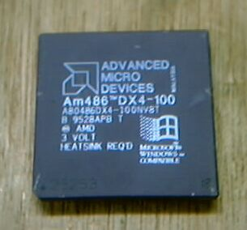
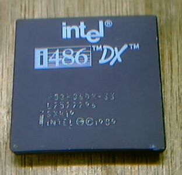
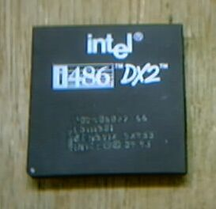
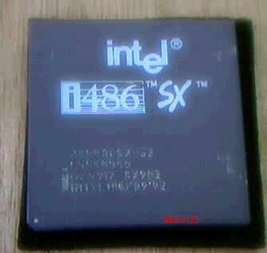
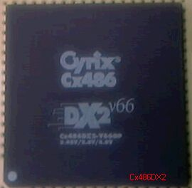
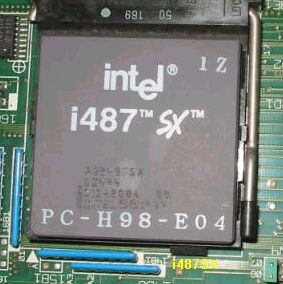
UP8810 のマニュアルとデバイスドライバのFD 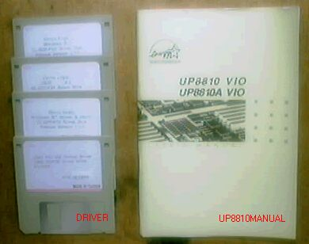
UP8810 テストの様子
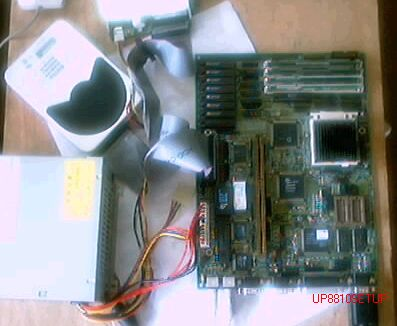
なぜ、こんな全く実用性のない、486などをいじっているのだと、思う方もいるでしょうが、 パソコンをどうとらえて、関わって行くのだという根本的な姿勢が、私とは違うのでしょう。
私にとって、パソコンは実用的な道具、文房具でもありますが、同時に楽しみのための物、 つまり玩具でもあるのです。古い物は、実用性を失い、玩具性だけが残ってゆく。玩具性
も無くなれば、捨てられることになるわけです。実用性を失ったマザーボードを、玩具にして 遊ぼうというのが、このマザーボード遊びの趣旨ですから、このページに、あまり実用性とか
、役に立つことなどを期待しないでください。最初に、金額で千円以下と、条件を付けている のは、この意味で、千円以下なら、実用性を考えなくても、いいだろうということですね。
たまに、実用的になってしまうことがありますが、それは、偶然の幸運と思います。
私は、真空管の全盛時代に、アマチュア無線をやっており、小遣いをためては、秋葉原へ 通った経験があり、それが何十年かたって、今度はパソコンに変わって再現したわけです。
歴史が、同じような経過をたどるとすると、そのうち実用性だけで、玩具性のないパソコン だけになり、興味を失ってしまうのかなと、ふと考えることもあります。
UP8810 Windows95でのベンチマーク
★ ★ ★ HDBENCH Ver 2.610 ★ ★ ★
使用機種 UP8810 AMD486DX2/66MHz HD-CFS425A
Processor 486 [・family 0 model 0 step 0]
解像度 800x600 256色(8Bit)
Display Cirrus Logic 5429/30/34
Memory 23,636Kbyte
OS Windows 95 4.0 (Build: 950)
Date 2002/ 8/ 3 13:32
HDC[?]=プライマリ IDE コントローラ (シングル FIFO)
HDC[?]=セカンダリ IDE コントローラ (シングル FIFO)
HDC = CMD PCI-0640 PCI to IDE Controller
HDC[X]=スタンダード IDE/ESDI ハード ディスク コントローラ
A = GENERIC NEC FLOPPY DISK
ALL 浮 整 矩 円 Text Scroll DD Read Write Memory
Drive
1584 1920 2834 2014 486 1793 45 0 2468 1112 1860
C:10MB
(2002/08/03追記)
UP8810 参考事項
・ドライバの、フロッピーディスクが付いていますが、Windows3.1などの古いシステム用なので、 Windows95で動かすのでしたら、不要です。Windows95標準のドライバで、OKです。
・HDは、LBAをEnableにしてやらないと、読めませんでした。
・機能拡張用のライザカードは、標準化されていないので、似たような他のメーカ、機種の 物を挿しても動きません。(2002/08/04追記)
その7 UM386-R マザーボード(50円)
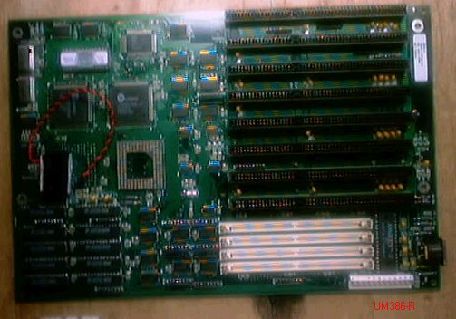
このボードは、UP8810を買ったとき、さらに店内をよく見て発見したもので。１箱全部買うなら、 100円と書いてありましたが、50枚位はありそうなので、１枚だけ５０円で買ってきました。
メーカはELITEのようで、ISAスロットに張ってあるバーコードにUM386-Rの文字がありました。 WEBで調べても、これだけ古いと、何も引っかかってこず、仕様なども不明です。課題は、
・CPU 386DXを探すこと。
・ISA用ビデオボードを探すこと。
・その他
部品がそろったら、動かしてみようと思います。 （2002/7/28記）
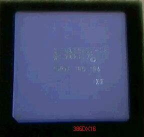
CPU 386DX/16 が見つかりました。i386DXの文字が、印刷されていませんが、386DX16MHz です。単体での386を見付けるのは、秋葉原なら可能かもしれませんが、私の住む宇都宮では、不可能です。
そこで、386DXの使われているマシンを探し、本体ごと購入することになるわけです。今回は、富士通の FM-TOWNSの初代が、簡単に見つかり、しかも100円で買えたので、ラッキーでした。正確には、100円プラス
廃棄物処理費用、ということですね。TOWNSのBIOSが立ち上がりましたので、動作もOKです。次は、ビデオ ボードと、FDコントローラ付きのSCSIカードですね。（2002/7/30記）
その8 MAC9500マザーボード(500円)
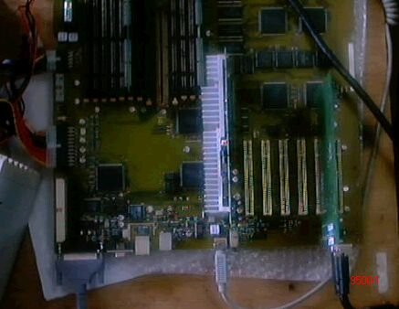
Power Macintosh9500のマザーボード（Tsunami）です。PowerPC604のドーターボードを、装着して
使用しますが、テストでは132MHzの物を使っています。1995年当時の、MACのフラグシップマシン だったのですが、現在では全く無価値ということで、値札1000円の物を500円で購入しました。
その値札を、考古学者が、地層を１枚ずつ丁寧に剥がすように、剥がしていったら、1000円の下に、 1500円、その下に3000円、最下層に6000円の札がありました。
DIMMスロットが一部破損していましたが、瞬間接着剤で補修し、CMOSバックアップ用の 電池を交換、ATIのMach64ビデオボードと、7600の電源、32MBのRAMと、外部SCSIにOS7.6.1の入った、
2GBのHDをつないで起動しました。起動成功、何の問題もなし。（2002/8/06記)
OS7.6.1が立ち上がった画面
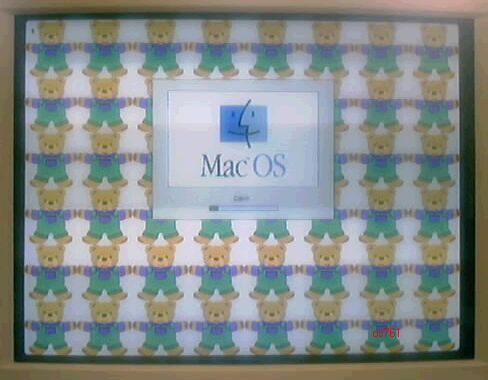
その9 MAC8500マザーボード(1000円)
Power Macintosh8500のマザーボード（NITRO）です。PowerPC604のドーターボードを、装着して 使用しますが、テストでは132MHzの物を使っています。ATIのMach64ビデオボードと、7600の電源、
32MBのRAMと、外部SCSIにOS7.6.1の入った、2GBのHDをつないで起動しました。起動成功、何の問題もなし。
その10 MAC7200マザーボード(100円)
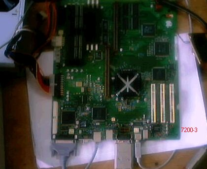
Power Macintosh7200のマザーボード（CATALYST）です。ケースと電源などを奪うために購入した、 メモリーなしで1500円の7200/90から、取り出したものです。そのため自己評価額で、100円として
あります。PowerPC601が、マザーボードにハンダ付けされていて、アップグレードが困難な機種です。 7600の電源、32MBのRAMと、外部SCSIにOS7.6.1の入った、2GBのHDをつないで起動しました。
起動成功、何の問題もなし。（2002/8/06記)
その11 MAC Quadra800マザーボード(100円)
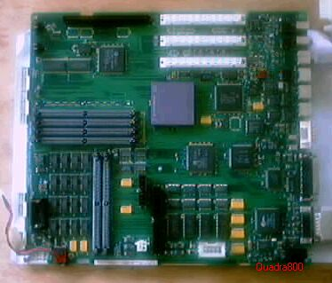
Quadra800のマザーボード（WBT33）です。 CPU68040を挿し、起動成功、何の問題もなし。（2002/8/06記)
その12 MAC 8600マザーボード(1000円)
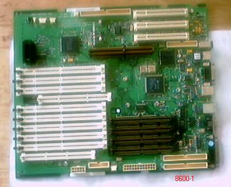
Quadra8600のマザーボード（M3S 8600）です。 電源の接続が、8500などとは違っており、変換コネクタを作っていないので、動作未確認。
（2002/8/06記)
その13 PC9821Xsマザーボード(0円)
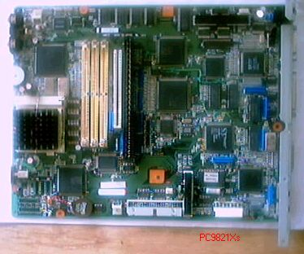
このボードは、秋葉原のあるジャンク屋が、開店記念ということで、２枚只でもらった物です。 修理上がり品が、不要になって、放出されたものらしい。486DX2と、ビデオチップがS3、ということから
、機種を絞ると、9821Xsではないかと思う。もちろん２枚とも完動品。（2002/8/06記)
その14 MS-6332マザーボード(800円)久しぶりにマザーボード遊び
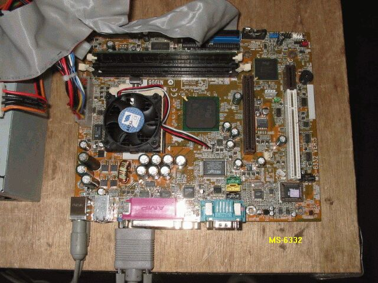
このボードは、秋葉原のラジオデパート地下1F、秋葉原エレクトリックパーツに、JUNKとして、旧年の暮れ頃あったものです。
２枚購入し、適当なCPUとメモリをさしてみたら、動作しなかったので、しばらく放置してありました。PenIII用らしいので、
今回は、Celeron800MHzと、PC133のSDRAM-128MBをさし、２枚とも、起動に成功しました。起動すると、NECのロゴが
でるので、NECのOEM品のようです。（企業向け省スペースデスクトップMA10TEらしい）Windows98で問題なく動作します。
このボードはUSBが３個付いているのに、LANがないので、PCIスロットにLANボードをさしてみると、認識はされるが！が
でます。これはPCIスロットではなく、ライザカードスロットのようです。ライザカードがないと実用にはならないので、また
しばらく放置ということになりました。
（2003/03/30記)
失敗その1 KN97-X マザーボード(970円) 起動成功（2002/7/30)
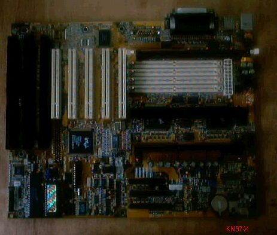
マザーボード遊びは、うまく行くばかりではなく、たくさんの失敗があります。これは、最近の失敗例で、 ジャンク購入時の鑑識眼とか、修復能力とかが不足しているようです。
このボードは、PemtumIIの、最初期のもので、チップセット440FXは、PentiumPro用のものです。 何とか動かそうとして、PemtumII233MHz（Klamath、2.8V）を３個も購入したのですが、どうしても
動きませんでした。（2002/7/28記）
起動に成功しました。変えたところは電源だけです。Pentium4対応の新品の電源の、具合が悪いようです。 AT電源が余っているので、壊れたATX電源の、コネクタだけ切り取り、電線をつなぎ直して、178Wattsの
ATX電源ができました。これをつないでスイッチを入れると、一発で起動成功。 （2002/7/30記）
失敗その2 AL440LX Intelマザーボード(980円)

このボードは、本格的にPemtumIIに対応した、最初のもので、チップセットは440LXです。 何とか動かそうとしたのですが、どうしても動きませんでした。（2002/7/28記）
失敗その3 DELLマザーボード1(800円)
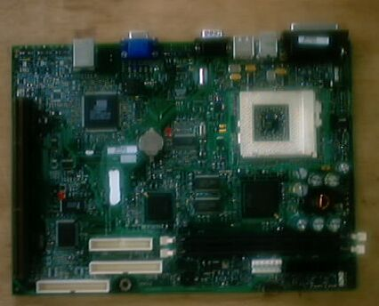
このボードは、メーカー名ペイントで消してありましたが、大体の感じから、DELLのものと判断できます。 電源配線が、普通のものとは違っているので、ATX電源を改造するか、DELLのジャンクを探すかすること
が必要です。私はDELLの電源を見付け、試してみましたが、動かすことができませんでした。 （2002/7/28記）
失敗その4 DELLマザーボード2(500円)
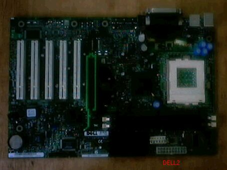
このボードも、DELLです。動きませんでした。（2002/7/28記）
以下制作中
back to top
back to home page